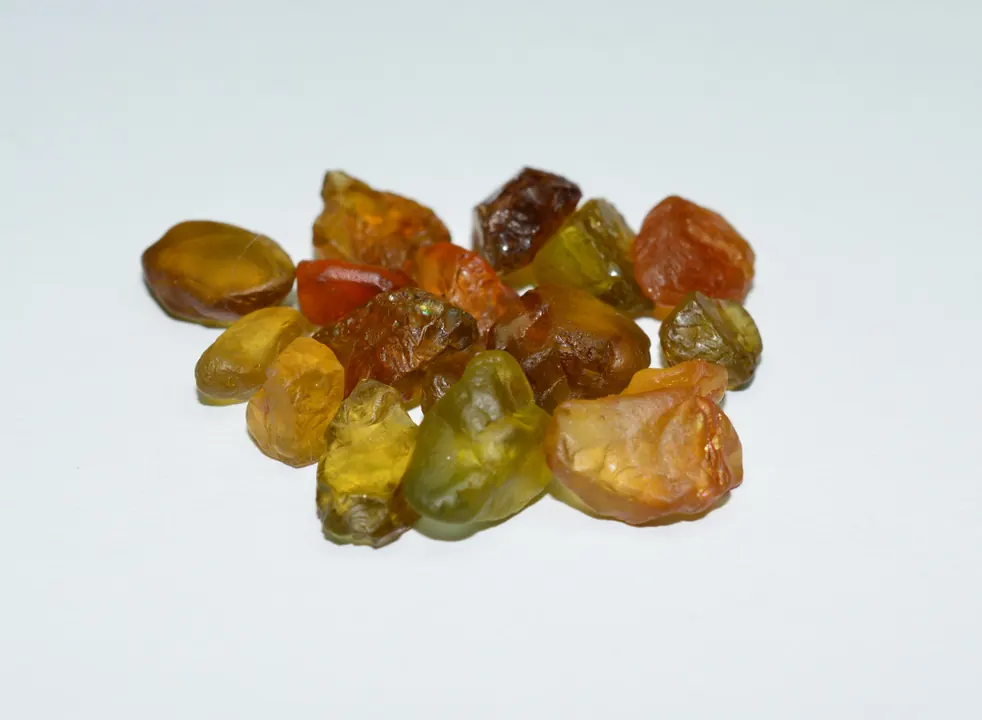

橄欖石：火山與隕石裡的綠
橄欖石是地球深處的「外賣」——地幔把它送上地表，隕石把它帶到人間。

核心定義
橄欖石（peridot）是鎂鐵矽酸鹽（(Mg,Fe)₂SiO₄），化學上屬於「橄欖石族」——黃綠色來自鐵離子。硬度 6.5–7、折射率 1.65–1.69、比重 3.3。它的出身極特別：來自地幔（地球深處），隨火山岩帶出地表，甚至出現在隕石中。
橄欖石的綠是「黃綠」（鐵的黃＋綠），被稱為「橄欖綠」——它不豔不暗，是「陽光綠」。歷史淵源：古埃及人稱它為「太陽的寶石」，在紅海澤貝爾傑德島開採了數千年。
特徵與分類
| 色調 | 描述 | 市場 |
|---|---|---|
| 濃綠 | 深黃綠 | 稀有貴 |
| 中綠 | 標準橄欖綠 | 主流 |
| 黃綠 | 偏黃 | 常見 |
橄欖石的等級看「綠的濃度與純度」：濃綠（少見、貴）＞中綠（主流）＞黃綠。內含物特徵：「荷葉狀」裂隙（橄欖石的標誌性內含物，像睡蓮葉）。橄欖石不經優化處理（天然色即本色）——「誠實寶石」。
科學原理
橄欖石的綠：鐵離子（Fe²⁺）吸收黃紅段光——黃綠色。鐵含量高則綠深（但過多變褐）。它來自地幔的「岩石圈」——橄欖石是地幔的主要礦物之一，火山噴發時隨岩漿帶出——「地幔來客」名副其實。
隕石中的橄欖石：「帕拉西鐵隕石」（pallasite）含橄欖石晶體——橄欖石也來自太空。鑑定：折射率 1.65–1.69（雙折射高）、「荷葉狀」內含物、比重 3.3——與綠色碧璽（雙折射更高）、翠綠橄欖石（綠色綠柱石）區分。
鑑定與鑑別方法
- 看顏色：黃綠（鐵致色）
- 顯微鏡：荷葉狀裂隙（標誌）
- 折射儀：1.65–1.69
- 排除玻璃仿品：雙折射重影
- 注意：橄欖石天然無處理
市場行情與保養建議
行情：橄欖石是「平價綠色寶石」——濃綠大克拉每克拉數百人民幣，主流黃綠更親民。它不經處理、顏色獨特，是「綠色入門」與日常珠寶的優選。
選購：看綠的濃度與淨度——濃綠＋乾淨是頂級；「荷葉狀」內含物是天然證明（別怕它，它是身分證）。
常見誤區
橄欖石顏色穩定（鐵致色不靠色心）——不褪色。褪色是染色仿品的問題，不是橄欖石。
橄欖石是鎂鐵矽酸鹽、翡翠是輝石族——完全不同的礦物與美學。橄欖石自有它的「陽光綠」定位。
冷知識
它誕生於地表下數百公里的地幔——火山把它送上人間，是寶石界的「深度代表」。
帕拉西鐵隕石含橄欖石晶體——你在珠寶店看到的橄欖石，與太空岩石是同一種礦物。
反直覺觀點
橄欖石來自地球最深處，顏色卻像陽光——鐵的黃綠，是地幔送給人間的陽光。
荷葉狀裂隙是天然橄欖石的標誌——有它，才證明「沒動過手腳」。瑕疵是誠實的證明。